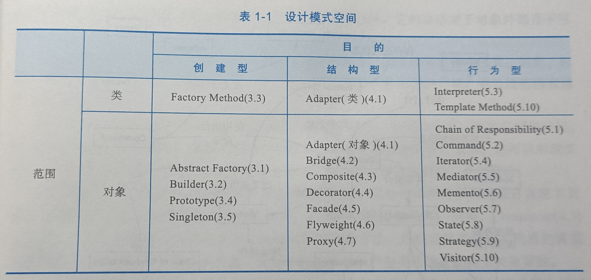
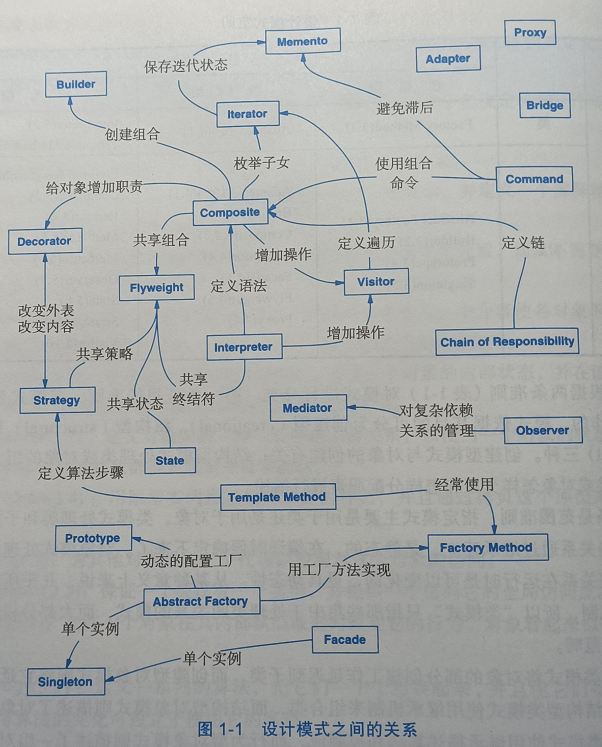

设计模式是对用来在特定场景下解决一般设计问题的类和相互通信的对象的描述。
组织编目

根据两条准则对模式进行分类：
- 第一条是目的准则：即模式是用来完成什么工作的
- 创建型模式：与对象的创建有关
- 结构型模式：处理类或对象的组合
- 行为型模式：对类或对象怎样交互和怎样分配职责进行描述
- 第二条是范围准则：指定模式主要是用于类还是用于对象
- 类模式：处理类和子类之间的关系，这些关系通过继承建立，是静态的，编译时便确定下来了
- 对象模式：处理对象间的关系，这些关系在运行时是可以变化的，更具动态性
从某种意义上说，几乎所有模式都使用继承机制，所以“类模式”只指那些集中于处理类间关系的模式，而大部分模式都属于对象模式的范畴。
创建型-类模式：将对象的部分创建工作延迟到子类
创建型-对象模式：将它延迟到另一个对象中
结构型-类模式：使用继承机制来组合类
结构性-对象模式：描述了对象的组装方式
行为型-类模式：使用继承描述算法和控制流
行为型-对象模式：描述了一组对象怎样协作完成单个对象所无法完成的任务

设计模式怎样解决设计问题
1. 寻找合适的对象
面向对象程序由对象组成，对象包括数据和对数据进行操作的过程，过程通常称为方法或操作。
对象在收到客户的请求（或消息）后，执行相应的操作。
客户请求是使对象执行操作的唯一方法，操作又是对象改变内部数据的唯一方法。
面向对象设计最困难的部分是将系统分解成对象集合。设计的许多对象来源于现实世界的分析模型，但是，设计结果所得到的类通常在现实世界中并不存在。
严格反映当前现实世界的模型并不能产生也能反映将来世界的系统。设计中的抽象对于产生灵活的设计是至关重要的。
设计模式帮你确定并不明显的抽象和描述这些抽象的对象。
2. 决定对象的粒度
对象在大小和数目上变化极大，设计模式能够很好的决定一个对象应该是什么。
3. 指定对象接口
对象声明的每一个操作指定操作名、作为参数的对象和返回值，这就是操作的型构。
对象操作所定义的所有操作型构的集合被称为该对象的接口。
对象接口描述了该对象所能接受的全部请求的集合，任何匹配对象接口中型构的请求都可以发送给该对象。
类型是一个用来标识特定接口的名字。如果一个对象接受“Window”接口所定义的所有操作请求，那么我们就说该对象具有“Window”类型。
一个对象可以有许多类型，不同的对象可以共享同一个类型。
接口可以包含其它接口作为子集，包含其它类型的接口的类型是子类型，被包含的接口的类型为超类型。子类型继承超类型。
4. 描述对象的实现
对象的实现由它的类决定，类指定了对象的内部数据和表示，也定义了对象所能完成的操作。
对象的类：定义对象的实现、内部状态和操作
对象的类型：只与接口有关，接口是对象能响应的请求的集合
类继承：根据一个对象的实现定义另一个对象的实现，是代码和表示的共享机制
- 复用了父类的实现
- 继承了父类的接口，多态依赖于此。当子类仅添加或重定义操作，而不隐藏父类的操作时，所有子类都能响应抽象类接口中的请求
接口继承：描述了一个对象什么时候能被用来替代另一个对象
- C++中接口继承的标准方法：公有继承一个含（纯）虚函数的类